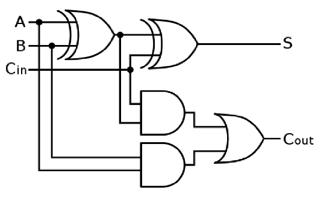

Boolean Expressions
Check Your Understanding – Questions
Question
A computer scientist has created the following logic circuit shown in Fig. 6.
(i) Give the Boolean expression that represents the logic circuit.
Do not attempt to simplify the expression.
(ii) Complete the truth table for the logic circuit shown in Fig. 6.
| A | B | C | P |
|---|---|---|---|
| 0 | 0 | 0 | |
| 0 | 0 | 1 | |
| 0 | 1 | 0 | |
| 0 | 1 | 1 | |
| 1 | 0 | 0 | |
| 1 | 0 | 1 | |
| 1 | 1 | 0 | |
| 1 | 1 | 1 |
Answer:
(i) Boolean expression
NOT(A OR B) XOR C
¬(A ∨ B) ⊕ C
(ii) Completed truth table
| A | B | C | P |
|---|---|---|---|
| 0 | 0 | 0 | 1 |
| 0 | 0 | 1 | 0 |
| 0 | 1 | 0 | 0 |
| 0 | 1 | 1 | 1 |
| 1 | 0 | 0 | 0 |
| 1 | 0 | 1 | 1 |
| 1 | 1 | 0 | 0 |
| 1 | 1 | 1 | 1 |
[3 marks]
Question
Daniel is an engineer. He has created the following logic circuit as shown.

Complete the truth table below for the logic circuit shown.
| A | B | C | D | X |
|---|---|---|---|---|
| 0 | 0 | 0 | ||
| 0 | 0 | 1 | ||
| 0 | 1 | 0 | ||
| 0 | 1 | 1 | ||
| 1 | 0 | 0 | ||
| 1 | 0 | 1 | ||
| 1 | 1 | 0 | ||
| 1 | 1 | 1 |
Answer:
D is the result of A AND B
X is the result of D XOR C
| A | B | C | D | X |
|---|---|---|---|---|
| 0 | 0 | 0 | 0 | 0 |
| 0 | 0 | 1 | 0 | 1 |
| 0 | 1 | 0 | 0 | 0 |
| 0 | 1 | 1 | 0 | 1 |
| 1 | 0 | 0 | 0 | 0 |
| 1 | 0 | 1 | 0 | 1 |
| 1 | 1 | 0 | 1 | 1 |
| 1 | 1 | 1 | 1 | 0 |
[4 marks]
Question
The following Karnaugh map represents another logic circuit.

(b) Use this Karnaugh map to find the simplified expression for this circuit.
Step 1: Highlight the groups on the K-map.
Step 2: Write the simplified Boolean expression.
Answer:
Step 1 (correct highlighting)
Step 2 (simplified expression)
¬A ∧ ¬C ∨ A ∧ ¬D
NOT A AND NOT C OR A AND NOT D
Question
Draw the logic gate represented by the K map below. Show your working.
Step 1: Group the 1s.
Step 2: Write the simplified Boolean expression.
Step 3: Draw the logic circuit / gate that matches your expression.
Answer:
Step 1 (correct grouping)

Step 2 (simplified expression)
(¬A ∧ ¬C) ∨ (A ∧ C)
NOT A AND NOT C OR A AND C
Step 3 (what gate is this?)
This simplifies to an XNOR gate between A and C (output is 1 when A and C are the same).
Equivalent forms:
- A ⊙ C (XNOR)
- ¬(A ⊕ C)
Question
An electronics engineer needs a circuit with the following logic:
(A ∧ B) ∨ (¬A ∧ B) ∨ (¬C ∧ ¬D)
Complete and use the Karnaugh map below to simplify the expression above.

Step 1: Fill in the K-map with 1s and 0s.
Step 2: Group the 1s to form the largest possible groups.
Step 3: Write the simplified Boolean expression.
Answer:
Completed K-map + grouping

Simplified expression
B ∨ (¬C ∧ ¬D)
B OR (NOT C AND NOT D)
1. OR vs XOR
Explain the difference in the function of an OR gate and an XOR gate.
An OR gate outputs 1 if at least one of its inputs is 1. An XOR gate outputs 1 if exactly one input is 1 – it is 0 when both inputs are 0 and also 0 when both are 1.
2. Worked simplification
Simplify the Boolean expression
(¬C ∧ ¬D) ∨ (C ∧ ¬D) and show your working, naming the rules you use.
- Common factor ¬D in both terms:
(¬C ∧ ¬D) ∨ (C ∧ ¬D) ≡ ¬D ∧ (¬C ∨ C) - Use general OR rule ¬X ∨ X = 1:
¬D ∧ (¬C ∨ C) ≡ ¬D ∧ 1 - Use general AND rule X ∧ 1 = X:
¬D ∧ 1 ≡ ¬D
Final answer: ¬D
3. De Morgan’s law
Simplify the expression so that it does not contain any negation over brackets:
Q ≡ ¬(¬A ∧ ¬B)
Show each step and name the Boolean rule you use.
- Apply De Morgan’s law:
¬(¬A ∧ ¬B) ≡ ¬(¬A) ∨ ¬(¬B) - Use double negation:
¬(¬A) ≡ A and ¬(¬B) ≡ B
So: Q ≡ A ∨ B
4. Factoring an expression
Using Boolean algebra rules, simplify the expression:
(E ∧ F) ∨ (E ∧ G)
Factor out the common term E (reverse distribution):
(E ∧ F) ∨ (E ∧ G) ≡ E ∧ (F ∨ G)
5. Using absorption
Using the rules for manipulating Boolean expressions, simplify:
A ∧ B ∨ A ∧ (B ∨ C) ∨ B ∧ (B ∨ C)
One possible route (summarised):
- Distribute where needed and combine like terms so that A∧B terms and B∧C terms are grouped.
- Use absorption: (A ∧ B) ∨ B ≡ B and (B ∧ C) ∨ B ≡ B.
Final simplified expression: B ∨ (A ∧ C)
6. Challenge simplification
Simplify the following Boolean expression using De Morgan’s Laws and other Boolean rules. Show enough steps to justify your answer:
¬(A ∧ B) ∨ ¬(A ∧ (B ∨ C)) ∨ (B ∧ (B ∨ C))
After applying De Morgan’s Laws, distribution, absorption and the general AND/OR rules, every possible combination of A, B and C makes the expression true.
Final answer: 1 (the expression is always true)
7. D-type flip-flop

(a) State what a D-type flip-flop does.
(b) When can the output change?
(c) Why is a flip-flop useful in digital systems?
(a) It stores the value of one bit: the output Q copies the input D at certain times and then holds that value.
(b) In a D-type flip-flop, Q can only change on the rising edge of the clock pulse.
(c) Because it holds its value between clock ticks, it can be used as a 1-bit memory cell or register stage inside counters, registers and other sequential circuits.
8. Half adder
(a) Complete the truth table for a half adder with inputs A and B and outputs
Sum S and Carry C.
(b) Write Boolean expressions for S and C.
Truth table:
| A | B | S | C |
|---|---|---|---|
| 0 | 0 | 0 | 0 |
| 0 | 1 | 1 | 0 |
| 1 | 0 | 1 | 0 |
| 1 | 1 | 0 | 1 |
Expressions:
- S = A ⊕ B
- C = A ∧ B
9. Full adder circuit
A logic circuit has three inputs A, B and Cin and two outputs S and Cout.
(a) Explain what the circuit does, referring to A, B, Cin, S and
Cout in your answer.
(b) Write Boolean expressions for S and Cout.
(a) It is a full adder. It adds the three 1-bit inputs A, B and Cin together. The output S is the least significant bit of the sum, and Cout is the carry-out bit produced when the total is 2 or 3.
(b) One common form is:
- S = A V B V Cin
- Cout = (A ∧ B) ∨ ((A ∨ B) ∧ Cin)